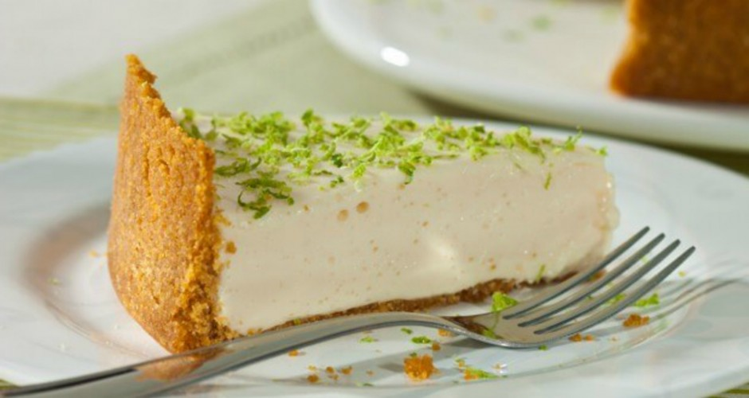
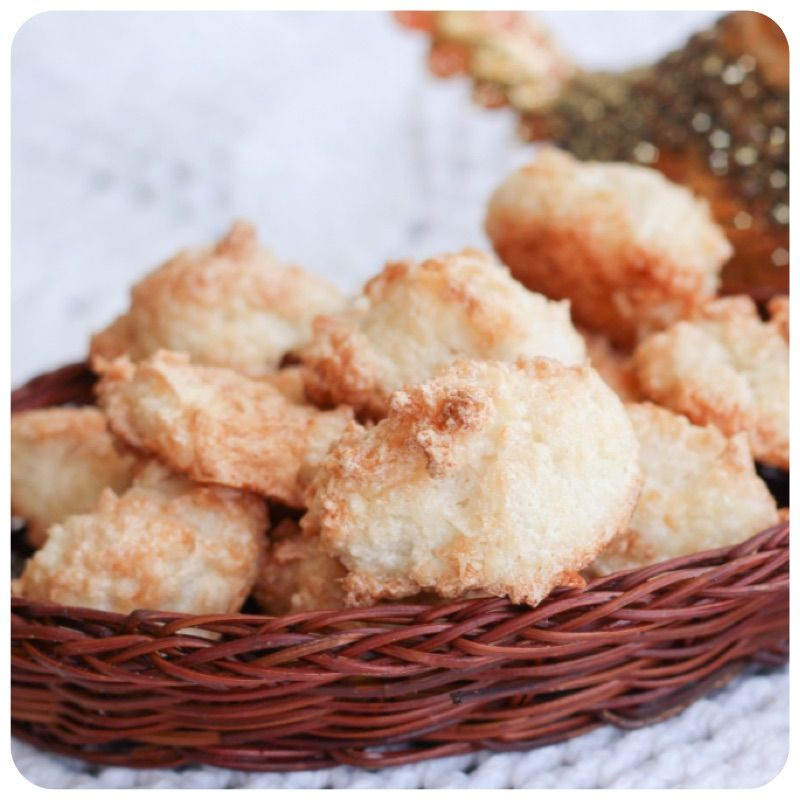
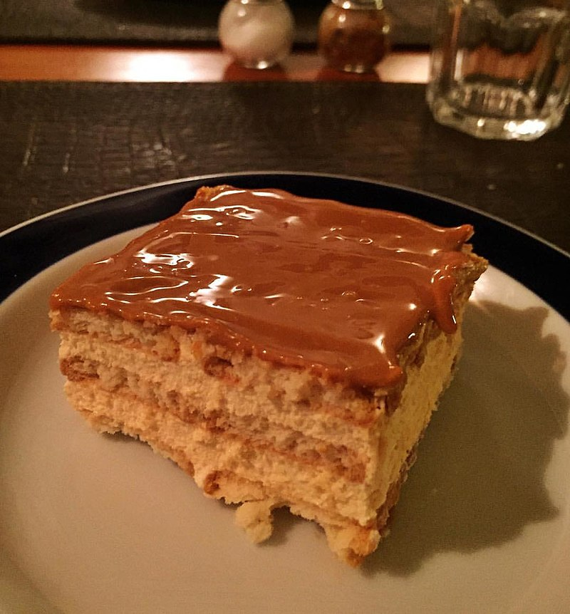
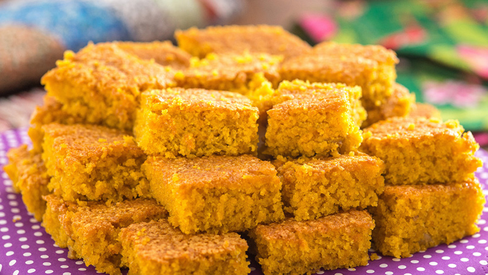

-
Torta de limão

Ingredientes:
- 2 gemas
- 2 colheres (chá) de fermento
- 1 pitada de sal
- 4 colheres (sopa) de manteiga
- Farinha de trigo (mais ou menos 16 colheres)
- 4 colheres de açucar
- 4 colheres de leite
Bata todos os ingredientes juntos; depois acrescente farinha de trigo até dar ponto. Forre uma forma que saia fora o fundo, espete a massa com um garfo e leve ao forno rapidamente.
Recheio:- 1 copo de suco de limão
- 2 latas de leite condensado
- 4 claras
- açucar
Misture o suco de limão com o leite condensado e coloque sobre a massa. Faça um suspiro com as claras e açucar, coloque raspas de limão e ponha por cima do recheio. leve novamente ao forno para clorar o suspiro.
-
Broa de fubá

Ingredientes:
- 3 xícaras (chá) de leite
- 3 xícaras de fubá
- Erva doce
- 2 xícaras de açucar
- 1 colher de manteiga
- 1/2 colher (chá) de bicabornato
Misturar tudo e levar para assar em forminhas untadas com manteiga.
-
Biscoito de coco

Ingredientes:
- 10 colheres de farinha de trigo
- 3 colheres (sopa) de açucar
- 3 colheres (sopa) de manteiga
- 3 colheres (sopa) de coco ralado
- 1 colherinha de Pó Royal
- 1 ovo
Misturar os ingredientes e amassar bem. Faça os biscoitinhos e passe-os no açucar cristal. Tabuleiro enfarinhado.
-
Pavê

Ingredientes:
- 250 g de manteiga
- 250 g de palitos franceses
- 1 colher (sopa) de chocolate em pó
- 250 g de açucar
- 1 cálice de vinho ou rum
Bata a manteiga com o açucar até tornar um creme. Junte o chocolate e as gemas, bata mais. Embeba os palitos. Numa forma rasa, arrume camadas de creme e de palitos; sendo a última de palitos. Leve à geladeira.
-
Bolo de cenoura

Ingredientes:
- 3 ovos
- 400 g de cenouras(raladas e cruas)
- 2 xícaras de farinha de trigo
- 2 xícaras de açucar
- 2 colheres de nescau
- 5 colheres (sopa) de farinha láctea
- 1 xícara (chá) de óleo
- 1 colher (sopa) de pó Royal
Bater os ovos com a cenoura no liquidificador. Acrescentar a farinha de trigo e os demais ingredientes e continuar batendo tudo muito bem, até formar uma massa dura. Assar em forno bem quente.